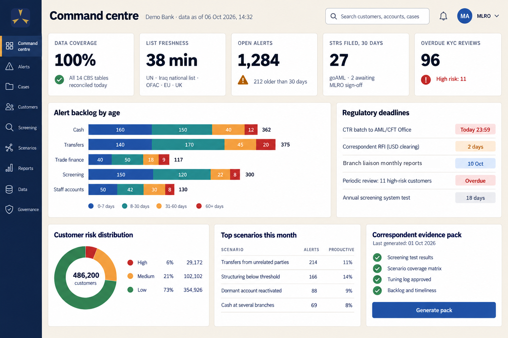
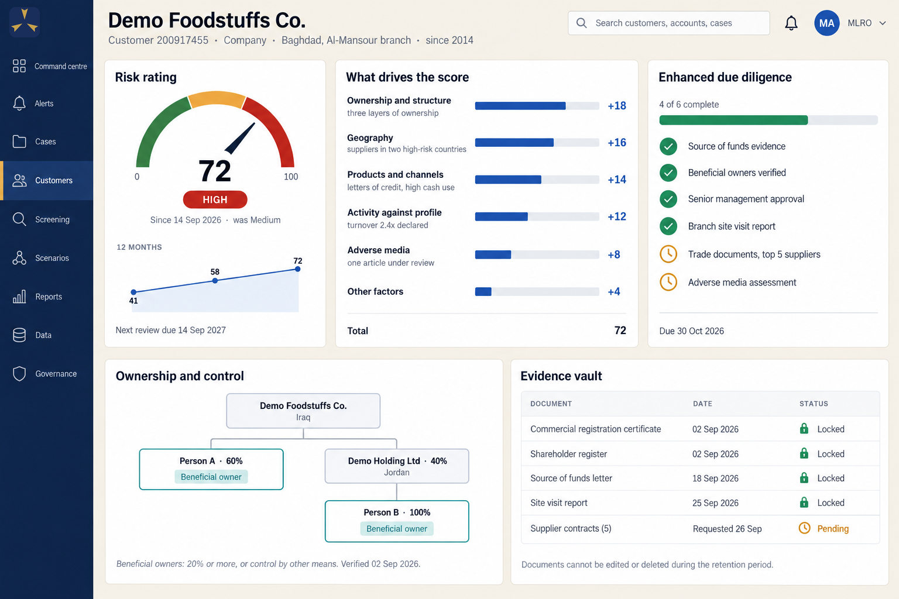
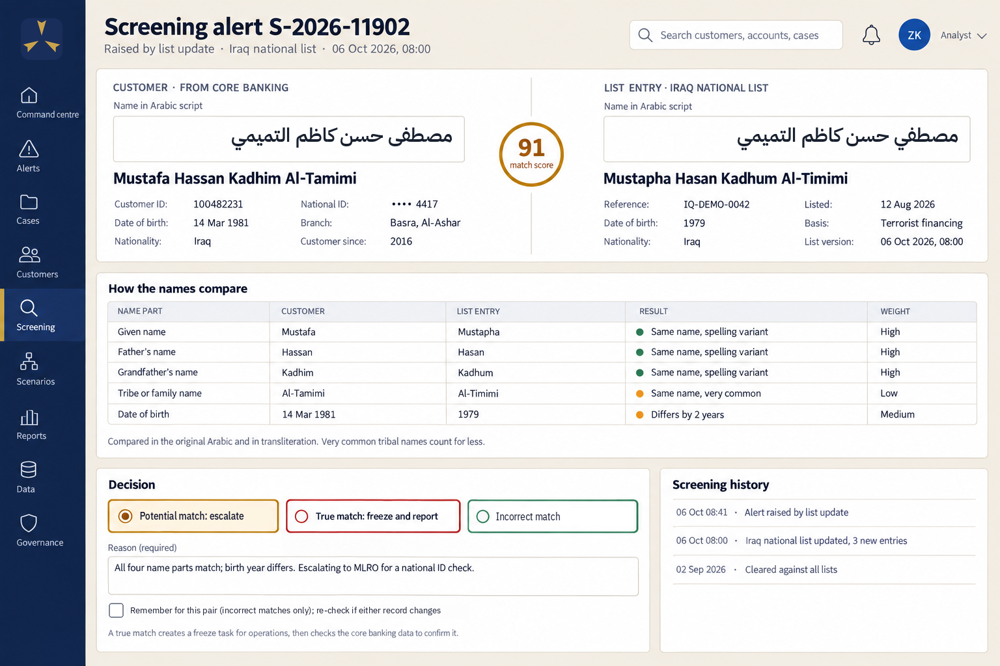
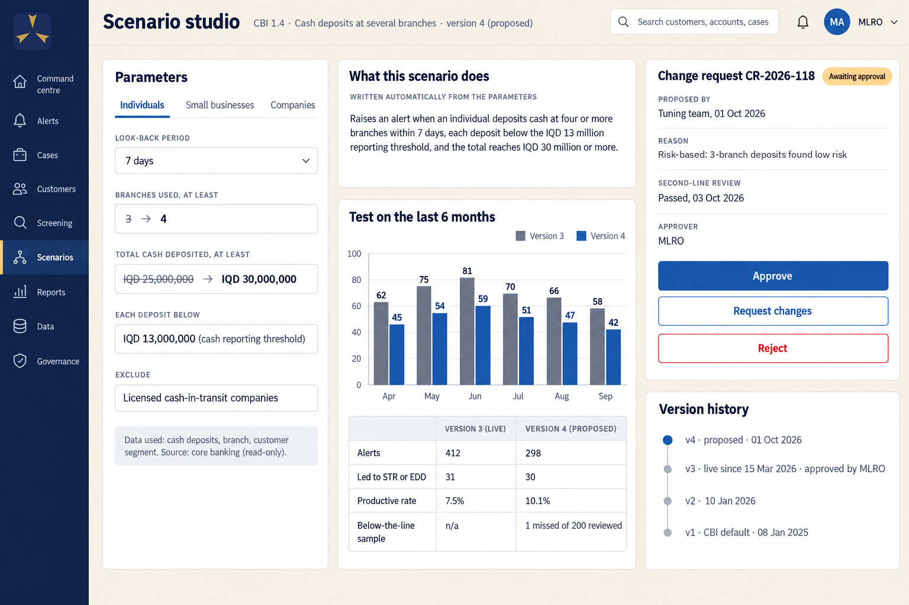
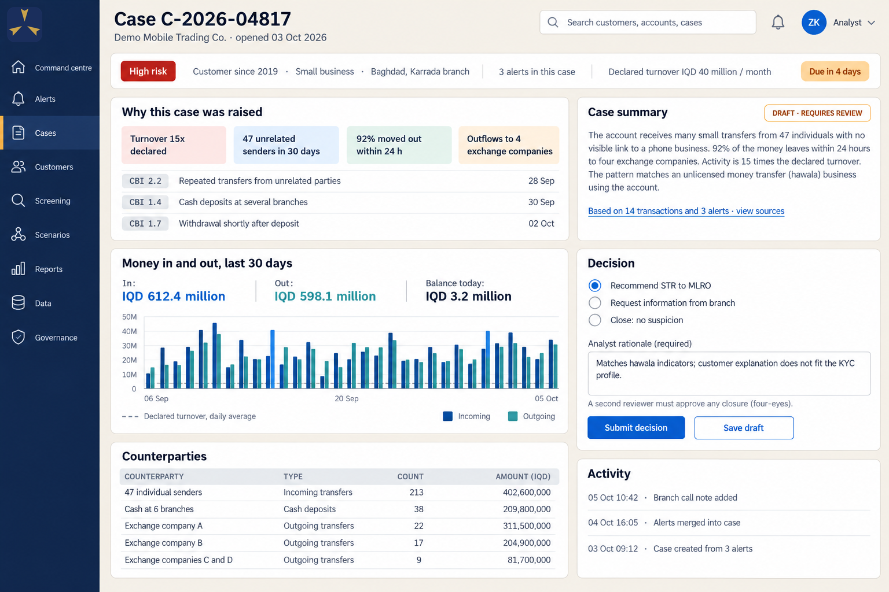
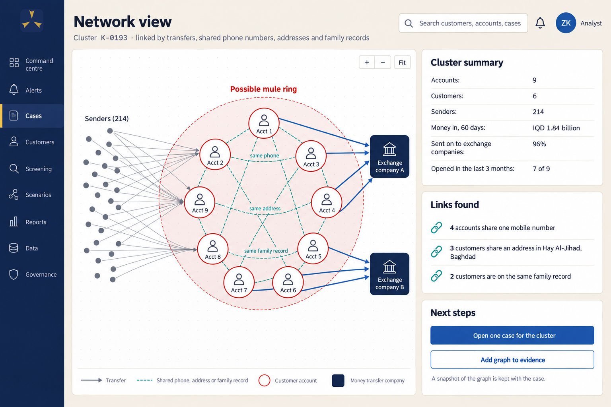
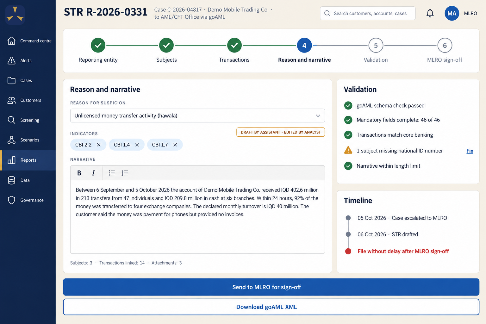
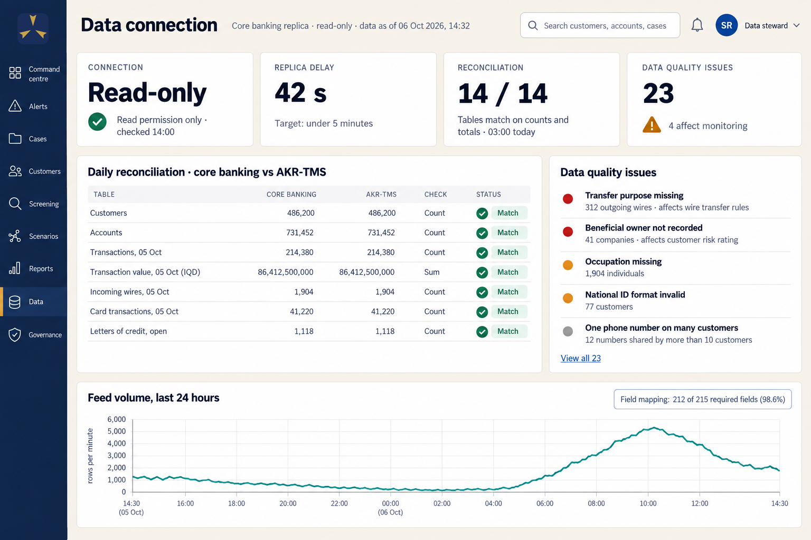

Iraqi banks must now prove their anti-money laundering controls to people outside the bank: the Central Bank of Iraq, the FATF's reviewers and, above all, the foreign correspondent banks that decide whether an Iraqi bank can move dollars at all. Having a monitoring system is no longer enough. The system has to find what matters in Iraqi data, and show that it did.
AKR-TMS is an anti-money laundering (AML) and know-your-customer (KYC) system designed for Iraqi banks. It monitors transactions, screens customers and payments against sanctions lists, rates customer risk and runs KYC reviews, supports investigations, prepares reports for the AML/CFT Office’s goAML system, and keeps the evidence of every step. It reads the bank’s core banking database through a read-only connection and never changes it.
What makes it different:
The plan runs in phases: six to eight weeks of discovery and data mapping, a core system live at the first bank in about nine months after a parallel run beside its current system, then checks on payments before release and validated machine-learning models over the following six months. Further banks follow in three to five months each.
On 19 June 2026 the Financial Action Task Force (FATF) put Iraq back on its list of jurisdictions under increased monitoring, the “grey list” that Iraq left in 2018. Iraq’s action plan has eight items. Four of them land directly on the monitoring systems of Iraqi banks:
Iraq’s oil revenue is held at the Federal Reserve Bank of New York, so the United States decides whether Iraqi banks can obtain and move dollars. Since 2023 Iraqi banks have been cut off from dollar transactions in waves: 14 banks in July 2023, 8 in January 2024 and 5 more reported in February 2025. In 2024 the US Treasury went further and designated one Iraqi bank a “primary money laundering concern”, which closes the US financial system to it entirely. The CBI’s own lists of February 2026 name 28 banks that may not deal in dollars, directly or indirectly, and 4 that are blacklisted.
The way back now runs through compliance. In July 2026 the CBI announced an understanding with the US Treasury: banks that meet its compliance and governance standards and complete the first phase of its reform and re-licensing programme return first to correspondent banking in other currencies, and later regain dollar dealings. Seven banks qualified for the first step. A bank that wants to be on that path has to show its controls work.
At the end of 2024 the Central Bank of Iraq (CBI) closed the electronic platform through which it had vetted dollar transfers. Since then each bank deals directly with its own foreign correspondent banks, in Jordan, the UAE, Kuwait, Europe and the United States. Each correspondent applies its own country’s rules to its Iraqi customers, and each can end the relationship.
| When | What happened |
|---|---|
| July 2023 | US bars 14 Iraqi banks from dollar transactions |
| January 2024 | 8 more banks barred after Iran sanctions concerns |
| July 2024 | US Treasury final rule against an Iraqi bank as a “primary money laundering concern” |
| End of 2024 | CBI dollar platform closes; banks must deal with correspondents directly |
| January 2025 | CBI issues detailed AML supervisory controls with explicit system requirements |
| February 2025 | 5 more banks barred, most of them Islamic banks |
| September 2025 | UN sanctions on Iran restored; US designates four more Iraqi armed groups as terrorist organisations |
| February 2026 | CBI lists 28 banks barred from dollar dealings and 4 blacklisted |
| June 2026 | FATF grey-lists Iraq |
| July 2026 | CBI and US Treasury agree a way back for banks that pass the CBI’s reform programme |
| August 2026 | CBI circulars on behavioural indicators and politically exposed persons |
| September 2026 | Deadline for each private bank’s external AML assessment under the CBI’s reform |
| July 2027 | New EU anti-money laundering regulation applies to every EU correspondent |
The CBI’s supervisory controls of January 2025 are unusually specific about what an AML system must do. They require real-time monitoring of account activity against what the customer declared; the CBI’s own catalogue of more than 86 scenarios as a minimum; artificial intelligence and machine learning to find suspicious activity; holding a transaction that matches a scenario until the money laundering reporting officer (MLRO) clears it; screening against the UN, Iraqi, US, EU and UK lists, refreshed at least every 12 hours, with search in Arabic and English; a liaison officer in every branch with a window into the system; and AML tools verified by a CBI-approved firm. The August 2026 circulars added daily news screening of politically exposed persons and their relatives to the second degree.
The CBI’s banking reform, in force since September 2025, makes that verification a test of survival. Every private bank that chose to continue had to submit, by 30 September 2026, an assessment of its anti-money laundering controls by an independent external auditor approved by the CBI. Gaps must be fixed and the file resubmitted within six months; a bank that cannot fix them may be moved to the merger or liquidation path. The auditor tests the system itself: its rule logic and alert thresholds, user permissions, the integrity of its audit trail, its links between customer checks, monitoring and screening, and whether the data behind each report can be traced.
The 2024 mutual evaluation of Iraq found that most of the rules are in place but that they do not yet work well enough: it rated the effectiveness of banks’ preventive measures “moderate” and of proliferation sanctions “low”. Every Iraqi bank already runs an automated monitoring system with the CBI’s standard scenarios, yet none of the banks interviewed had written a single scenario of its own, and large numbers of alerts were archived every day against very few reports. Bank reports to the AML/CFT Office rose from 82 in 2022 to 672 in 2023 and 451 in 2024; that is still about six reports per bank per year. The quality is there (the Office graded 90 percent of bank reports “good” in 2022). The volume, the coverage and the evidence are not.
Every foreign regime reaches an Iraqi bank through its correspondents:
| What it means for an Iraqi bank | |
|---|---|
| United States | Dollar clearing depends on screening against US sanctions lists, including companies owned 50 percent or more by listed persons, and on coverage of Iran-related and armed-group typologies. Sanctions records must be kept for 10 years |
| European Union | From July 2027 every EU bank applies one regulation that requires a record of every assessment, human involvement in automated decisions, and answers to authorities within days. A new EU authority can single out an individual non-EU bank whose controls fall short; EU banks must then stop new business with it and end existing relationships unless they can show the risk is covered |
| United Kingdom | Iraq counts as a high-risk country. UK banks no longer have to apply enhanced checks to every Iraqi relationship automatically, so the quality of the Iraqi bank’s own controls decides how it is treated |
| UAE and the Gulf | UAE banks follow detailed guidance on monitoring and screening (daily re-screening, data testing, documented tuning) and expect the same from their partners. Kuwait and Lebanon are grey-listed too, so their banks pass the pressure on |
The common thread is evidence. A correspondent cannot visit the bank, does not read Arabic, and will not take the bank’s word for it. It wants to see which lists are screened and how fast they are updated, which scenarios run and how they were tested, how many alerts are waiting and for how long, and who approved each change.
What this means. An Iraqi bank’s AML system is no longer a back-office tool. It decides whether the bank can do business in dollars. It has to do three things at once: meet the CBI’s explicit requirements; find what matters in Iraqi data, which is largely in Arabic; and prove all of it to people outside the bank.
Iraqi law and the CBI’s instructions always come first. The research behind this plan read the AML/CFT Law No. 39 of 2015, the CDD instructions of 2023, the CBI supervisory controls of 2025 and the CBI circulars of August 2026 in full. Their requirements for an AML system, condensed:
| Area | What the CBI requires |
|---|---|
| Monitoring | Real-time monitoring of all account activity against declared activity; the full CBI scenario catalogue as a minimum, plus the bank’s own scenarios; AI and machine-learning analytics |
| Holding transactions | A transaction matching a scenario is held until the MLRO clears it |
| Customer risk | High, medium and low ratings (up to five levels) on customer, product, channel and geography; re-rating on events; review at least every two years; KYC refresh at least yearly |
| Screening | UN, Iraqi national list, US, EU and UK lists, with World-Check named as the data source; all parties including beneficial owners; refresh at least every 12 hours; Arabic and English search |
| PEPs | Relatives to the second degree and close associates; daily local and regional news screening; status kept after leaving office |
| Wire transfers | Complete originator and beneficiary data including purpose; incomplete incoming transfers detected and rejected if not fixed |
| Branches | A liaison officer in every branch with a branch window in the AML system; monthly report by the 10th |
| Reporting | STRs through goAML, including attempted transactions and any amount, with reasons; written decisions, also when the MLRO decides not to report |
| Records | At least five years after the relationship ends, and seven years of AML data for the reform’s external assessment; transactions can be reconstructed; off-site backup |
| Assurance | AML tooling verified by a CBI-approved firm; three lines of defence; reports to the board and audit committee |
The FATF’s 40 Recommendations (revised to October 2025) set the global baseline: customer due diligence, beneficial ownership, politically exposed persons, payment transparency, suspicious transaction reporting and the freezing of terrorist and proliferation funds “without delay”, which the FATF defines as within hours. The UN Security Council’s consolidated list, including the Iran sanctions restored in September 2025, applies to every Iraqi bank. The Basel Committee, the Wolfsberg Group of global banks and the Egmont Group of financial intelligence units add detailed guidance on monitoring, screening and reporting that correspondents use as their checklist.
US, EU, UK and UAE rules were written separately and years apart, yet they now describe almost the same screening and monitoring system: complete and current lists checked against the official source; every party and identifier screened, in the original script and in transliteration; ownership and control taken into account; matching tested before and after every change; re-screening on every list change; backlogs under control; and every decision recorded and explainable. AKR-TMS is built to the union of these rules, so that one system satisfies the CBI and every correspondent at once, and each bank switches on the foreign “regime packs” that apply to it.
The research behind this plan reviewed Iraqi law and CBI instructions, the FATF standards, UN sanctions, the Basel, Wolfsberg and Egmont guidance, US, EU, UK and Gulf regimes, more than 50 AML and KYC suppliers, and about 40 enforcement cases. It produced more than 1,200 specific product requirements, each traced to its source.
More than 50 AML and KYC suppliers were reviewed, from the global suites and the core banking vendors to this year's AI start-ups and the regional suppliers already working in Iraq. The best of them do many things well, and AKR-TMS adopts those as its minimum. None documents the whole of what an Iraqi bank needs.
| Kind of supplier | Examples | Strong at | Weak for an Iraqi bank |
|---|---|---|---|
| Global AML suites | Oracle, SAS, NICE Actimize, SymphonyAI | Breadth, rule libraries, case management | Cost, heavy data loading, gaps in Arabic and goAML |
| AI detection specialists | Quantexa, Hawk, Feedzai, Tookitaki | Network analysis; models that rank alerts | Mostly foreign cloud or big-data stacks; no Arabic |
| Investigation automation | Silent Eight, Napier, Lucinity, Unit21, Flagright | Faster alert review; modern case tools | Mostly cloud; more autonomy than Iraqi rules allow |
| Screening engines and list data | LexisNexis, Eastnets, FinScan, Swift, LSEG World-Check, Dow Jones | Sanctions and PEP lists; payment screening | Arabic and Iraqi names handled poorly; no data supplier publishes its Iraqi coverage |
| KYC and onboarding platforms | Fenergo, Pega, Moody’s, Encompass, Uqudo | Client lifecycle workflows; identity checks | Cloud-only, and built to own the customer record with write access; only one documents the Iraqi national card |
| AML modules of core banking vendors | Temenos, Azentio (iMAL), Capital Banking Solutions, Oracle (FLEXCUBE) | A ready link to their own core system; one contract | End-of-day feeds; no published Arabic matching or full CBI pack. The core system most Iraqi banks run has no AML module |
| Regional suppliers | Pio-Tech (Jordan), Eastnets (UAE) | Iraqi or regional customers; goAML and customer-risk modules; Arabic-speaking teams | No published accuracy or prices; detection depth unclear |
What Iraqi banks run today. Every Iraqi bank already runs a monitoring system (section 2), so AKR-TMS replaces or sits beside an existing tool rather than filling a gap. Banks’ annual reports name their tools, often several per bank: FICO Siron for monitoring at two of the largest private banks, Firco for payment screening at two banks, core banking vendors’ AML modules at four banks, and goAML, customer-risk and scenario modules from Pio-Tech, a Jordanian supplier that lists 29 banks in Iraq among its references. None of the largest global suites has an Iraqi customer. Auditors at two banks still describe the CBI’s minimum as 25 scenarios; the 2025 catalogue numbers 86.
| What an Iraqi bank needs | What the market offers |
|---|---|
| A system in the bank’s own data centre | Most new products, and the newest AI features of the large suites, run only in foreign clouds |
| Arabic names matched properly, Iraqi naming included | Arabic treated as an edge case. Oracle’s on-premises name matcher states that Arabic characters “will not match”; no vendor documents handling of the mother’s name, tribe or Kurdish spellings |
| The CBI’s scenario catalogue | Global vendors ship their own libraries; the systems in Iraq that carry CBI scenarios do not show which ones, or whether the set is current |
| Reports to the AML/CFT Office through goAML | One global suite documents a goAML module, but not for Iraq; a regional module runs at two Iraqi banks, with no published test results |
| Islamic contracts monitored as contracts | No vendor documents murabaha, ijara, musharaka or mudaraba |
| A read-only link with proof of completeness | Heavy data loading through several staging databases; completeness rarely measured |
| Rules that can change quickly | TD Bank added no new scenario between 2014 and 2022 |
| A price an Iraqi bank can pay, and local support | No published prices; global suites meter licences by volume and have no office in Iraq |
| Continuity | NICE Actimize is being sold; FICO and BAE sold their AML products; start-ups are being bought |
Claims and evidence. Vendors advertise that AI clears 75 to 98 percent of alerts automatically and removes 30 to 99 percent of false positives. The only figure compiled by a regulator from a bank in production is 7 percent of alerts closed automatically, with sampling and the option to reopen (Hong Kong Monetary Authority, 2023). AKR-TMS promises only what it can show on the bank’s own data before a contract is signed: a replay of twelve months of the bank’s history, compared alert by alert with the system the bank already runs.
Iraq’s 2022 law against normalisation with Israel bans economic dealings with Israeli companies, with severe penalties. NICE Actimize, one of the largest AML vendors, and ThetaRay, an AI detection vendor, are headquartered in Israel. Banks should take legal advice before considering either. US vendors carry a different risk: their own sanctions policies can end licences and support for a bank that becomes subject to US measures. AKR-TMS applies the same legal check to every component and data feed it uses.
AKR-TMS is built for the gap: in the bank’s own data centre, read-only, Arabic first, with the CBI catalogue, goAML reporting and Islamic contracts built in, a published price, and continuity guaranteed by source-code escrow and open export of all data. Where a bank already runs a screening engine it trusts, AKR-TMS imports that engine’s alerts and adds what is missing, rather than demanding a replacement.
About 40 enforcement actions against banks and payment firms were studied, most of them from the regulators' own notices. The cause was seldom a weak algorithm. Banks were fined because the system was not given all the data, because alerts were limited to fit the staff, because nobody tested whether it worked, and because the records could not be trusted.
| What went wrong | Where it happened | What AKR-TMS does |
|---|---|---|
| The system did not see all the data | TD Bank left 92 percent of its transaction volume, over USD 18 trillion, unmonitored (US, 2024). Metro Bank’s monitoring, fed from a copy of its core banking data, missed 60 million transactions worth GBP 51 billion (UK, 2024) | Reconciles what it received against the core banking database every day, table by table, and shows coverage on the front page |
| Alerts were limited to fit the staff | US Bancorp capped alerts to match its staffing; ING’s system stopped monitoring some categories after three alerts a day; by 2015 HSBC UK’s rules suppressed two-thirds of its alerts | No caps and no hidden filters. Workload is managed in the queue; a threshold changes only with tested evidence and approval from outside operations |
| Nobody tested whether it worked | Starling screened customers against 39 of 3,088 listed names for six years (UK, 2024) | Daily tests with known answers on every list and scenario; a scenario that goes silent raises an alarm |
| Data the bank held was never used | Standard Chartered held fax numbers and IP addresses pointing to Iran; Swedbank Latvia saw IP addresses in Crimea | Addresses, phone prefixes and login locations feed screening and customer risk |
| Exemption lists switched controls off | Habib Bank’s “good guy” list let at least USD 250 million through unscreened; Rabobank’s “verified” customers, exempt from review, grew from fewer than 10 in 2009 to over 1,000 by 2012 | Exemptions are approved by two people, expire, and are re-tested whenever a list changes |
| Declared activity was never checked | NatWest onboarded a jewellery business expected to handle no cash and never compared that with the cash it deposited | Expected activity from KYC is compared with actual activity in every customer review and scenario |
| Records were edited or withheld | Metro Bank (edited minutes), US Bancorp (altered presentations), Swedbank (narrowed answers to its New York regulator; USD 50 million, July 2026) | Logs, parameter changes and board packs are generated by the system with full history, and cannot be altered |
| Backlogs grew with the business | Coinbase’s unreviewed alerts passed 100,000 by the end of 2021 after rapid growth | Queue clocks, ageing alarms and volume forecasts on the command centre |
Closest to home. On 1 September 2026 the US Treasury proposed cutting the UAE branches of Egypt’s state-owned Banque Misr off from US correspondent banking. Its case rests on flows alone: 103 potential Iranian front companies that moved about USD 1.8 billion through the branches, set against their size. A bank can compute the same ratios from its own data. AKR-TMS gives each bank this view of itself before its correspondents compute it.
Ten principles follow from the rules, from what existing systems do well and badly, and from the cases in which banks were fined. Each one shapes something a user can see in the product.
AKR-TMS has six working modules on a shared foundation of governance, evidence and audit. All of them work from one picture of each customer, built from the core banking data, so an analyst never has to reconcile what the screening system, the monitoring system and the KYC file each say about the same person.
The command centre is the MLRO’s daily view, and the first screen a supervisor or a correspondent is shown. It answers five questions at a glance: is the data complete, are the lists current, how large and how old is the backlog, what is due to whom, and how is customer risk spread across the bank.
Customer risk is calculated, not typed in. AKR-TMS rates every customer on the four risk elements the CBI prescribes (customer, product and service, delivery channel, geography) on up to five levels, and re-rates on events instead of waiting for the next review: a list match, a sharp change in activity, an adverse news item, a new owner.

Screening is where Iraqi banks are most exposed, and where imported systems are weakest. Most names on an Iraqi bank’s books are Arabic, and so are many names on the lists that matter most to it. The same name can be written in Latin letters a dozen ways (Mustafa, Moustafa, Mustapha), and a full Iraqi name chains a person’s own name with the father’s, the grandfather’s and often a family or tribal name.

AKR-TMS ships with the CBI’s full scenario catalogue: 86 numbered scenarios plus the product indicators, each mapped to the data it needs and to the CBI article it implements. Its library holds 161 scenarios in 18 families. Beyond the catalogue they cover the risks named in Iraq’s action plan and by foreign authorities (hawala through bank accounts, sanctions evasion, front companies, trade-based laundering, misuse of dollar access), Islamic products, and public funds and payroll: corruption is the threat Iraq’s national risk assessment ranks first, yet the CBI catalogue has no scenario for it. As the CBI’s controls require, a bank adds such scenarios in coordination with the AML/CFT Office.

An analyst opens a case, not a pile of alerts. The case shows why it was raised, how money moved in and out against what the customer declared, who the counterparties are, and what earlier alerts and reviews found.


Reports go to the AML/CFT Office through goAML, the reporting system the Iraqi financial intelligence unit uses. AKR-TMS builds each report from its case: subjects, accounts and transactions are filled from the core banking data, the narrative is drafted for the analyst to edit, and the report is checked against the goAML schema the Office publishes, including Iraqi rules such as the mother’s name of each person reported, before the MLRO signs it. A named officer uploads the approved file and AKR-TMS records the Office’s reference; it never holds a goAML password.

Everything that changes how AKR-TMS decides (a threshold, a scenario, a list source, a model) has an owner, a version, test results and an approval. The same records feed four evidence packs, one per audience:
| Audience | What its pack shows |
|---|---|
| CBI and AML/CFT Office | Coverage of the CBI catalogue, list freshness, backlog and timeliness, reports filed, branch liaison reports |
| Correspondent banks | Lists screened and update times, screening test results, scenario coverage, tuning log, backlog age, answers to their due diligence questionnaires |
| Independent validator, CBI-approved firm | Inventory of rules and models, test results, change history, data reconciliation, model documentation |
| Board and audit committee | Risk distribution and trends, overdue items, key changes and approvals, the annual certification |
AKR-TMS reads the core banking database and nothing else. It never writes to it and never calls the core banking application or its interfaces. That one rule makes AKR-TMS easy for a bank's IT and security teams to approve, and independent of which core banking system the bank runs.
Iraqi banks run several core banking systems: international products, regional ones and systems built in house. Some older systems cannot be read through a database connection at all. AKR-TMS translates each bank’s tables into one standard model of customers, accounts and transactions through a mapping layer. The mapping is configuration, owned by the bank and versioned like any other change, so connecting a new bank takes weeks of mapping rather than months of custom development. Where a database connection is impossible, the bank delivers files to an agreed landing area instead, with counts and checksums that still prove completeness. Payment messages are read from the payment systems’ own records, because a core banking system often holds only a summary of them.

When a customer must be frozen or a payment held, AKR-TMS does not do it itself. It creates a task for the bank’s operations team, who act in the core banking system as they do today. AKR-TMS then checks the core banking data to confirm the action was taken, and keeps watching: any debit from a frozen account after the freeze, including bank fees, is flagged at once.
The CBI requires a transaction that matches a scenario to be held until the MLRO clears it. For payments, that can only happen before release, inside the payment flow. AKR-TMS will offer an optional connection that the bank’s payment gateway calls before it releases a SWIFT, RTGS or ACH payment. AKR-TMS screens and scores the payment and answers release, hold or reject within the time the payment system allows; the gateway then acts on the answer. The bank decides, rail by rail, what happens if no answer comes in time. The connection starts in shadow mode, then advises, and only then enforces. Until it is in place, AKR-TMS monitors minutes after the event, and records that real-time holds depend on the bank’s existing payment filter.
Under the hood. AKR-TMS uses a modern open-source stack: services written in Rust, PostgreSQL databases, write-once document storage, a secrets vault, single sign-on and a web interface built in React, running on a small Kubernetes cluster with full monitoring and logging. No part of it needs a foreign vendor’s licence, and it runs without internet access.
The CBI requires AML systems to use artificial intelligence and machine learning. Correspondents and the new EU rules require that people, not machines, make the decisions, and that every automated step can be explained. AKR-TMS meets both by putting each technique on one of three tracks, each with its own controls.
| Track | What it covers | How it is controlled |
|---|---|---|
| Rules | CBI scenarios, the bank’s own scenarios, screening settings | Readable in plain language; tested on past data before approval; versioned and reversible. Rules are configuration, not models |
| Models | Anomaly detection, alert prioritisation, network risk, calibration of risk scores | Documented; validated before use by someone independent of the builders; monitored monthly for drift; explained alert by alert; can be suspended at once, with automatic fallback to rules |
| AI assistant | Case summaries, report narrative drafts, Arabic-English translation, search across case documents | Drafts only, always labelled; every statement linked to its source; a named person edits and decides; runs inside the bank; never decides an alert or a report |
Iraqi banks differ widely: state banks with millions of customers and large branch networks, private banks of every size, Islamic banks and Islamic windows, banks headquartered in the Kurdistan Region, and branches of foreign banks. AKR-TMS is one product, configured for each bank and never customised.
Murabaha, ijara, musharaka, mudaraba, salam, istisna’a and qard hasan each carry their own laundering risks: commodity trades that never take place, sale-and-buyback structures, investment accounts used to place cash, charity and zakat funds diverted to terrorism. AKR-TMS reads Islamic contracts as contracts, not as loans, and adds a scenario pack for them. Of the 28 banks on the CBI’s February 2026 list of banks barred from dollar dealings, 17 are Islamic banks.
Large customer bases, wide branch networks and older systems. The file landing route connects systems that cannot be read through a database, and the branch window supports a liaison officer in every branch.
Kurdish names are matched alongside Arabic ones. A Kurdish (Sorani) interface is planned next to Arabic and English.
Iraq is always on. Packs for the US, the EU, the UK, the UAE, Saudi Arabia and Jordan add each regime’s lists, rules, retention periods and evidence formats. A bank switches on the packs its correspondents and owners require. Where two rules differ, the stricter one applies unless the bank’s policy records a reason otherwise.
Each bank gets its own installation in its own data centre, and no data are shared between banks. Product updates, list feeds and new scenarios arrive as signed packages, which the bank tests and approves before use.
AKR-TMS is delivered in phases, and each phase leaves the bank better off on its own. Durations are indicative for the first bank; they depend most on how fast database access is approved.
| Phase | What it delivers |
|---|---|
| 0. Discovery (6 to 8 weeks) | Inventory of the core banking and payment systems; read-only access approved; data mapped; data-quality baseline; alignment with the bank’s own risk assessment |
| 1. Core system (first bank live in about 9 months) | Screening with Arabic matching; the CBI scenario catalogue and the Iraq risk pack; customer risk rating and KYC reviews; cases, investigation and network view; goAML reporting; command centre, branch window and evidence vault; daily reconciliation. Ends with two to three months of running beside the bank’s current system, comparing every alert |
| 2. Before release, and smarter (about 6 months more) | Pre-release checks for payments; models in shadow mode, then live after validation; the AI assistant for summaries and narratives; correspondent and validator packs |
| 3. Scale (ongoing) | Further banks in three to five months each; more regime packs; Islamic pack updates; Kurdish interface |
AKR-TMS sets no target for the number of reports. Better detection will produce more reports, and Iraq’s action plan asks for them, but a report filed to meet a quota is only noise for the AML/CFT Office.
| Term | Meaning | Arabic |
|---|---|---|
| AML/CFT | Anti-money laundering and countering the financing of terrorism | مكافحة غسل الأموال وتمويل الإرهاب |
| KYC, CDD | Know your customer; customer due diligence: identifying customers and understanding their activity | اعرف عميلك، العناية الواجبة تجاه العملاء |
| EDD | Enhanced due diligence: extra checks for higher-risk customers | العناية الواجبة المعززة |
| Beneficial owner | The person who ultimately owns or controls a customer | المستفيد الحقيقي |
| PEP | Politically exposed person: someone with a prominent public function, and their family and close associates | الشخص المعرض سياسياً |
| Risk-based approach | More effort where the risk is higher, less where it is lower | النهج القائم على المخاطر |
| Transaction monitoring | Checking account activity for signs of laundering or terrorist financing | مراقبة العمليات |
| Scenario | A rule that describes a suspicious pattern and raises an alert when it occurs | سيناريو |
| Alert, case | An alert is one signal; a case groups the alerts about one customer for investigation | تنبيه، حالة |
| False positive | An alert or list match that turns out not to be suspicious | إنذار كاذب |
| Screening | Comparing customers and payments against sanctions and PEP lists | الفحص على القوائم |
| Asset freeze | Blocking the funds of a listed person without delay | تجميد الأموال |
| STR | Suspicious transaction report to the financial intelligence unit | تقرير عن معاملة مشبوهة |
| CTR | Report of cash transactions above a threshold (USD 10,000 or its equivalent in Iraq) | تقرير المعاملات النقدية |
| goAML | Reporting software from the UN Office on Drugs and Crime, used by the Iraqi financial intelligence unit | goAML |
| AML/CFT Office | Iraq’s financial intelligence unit, which receives STRs and CTRs | مكتب مكافحة غسل الأموال وتمويل الإرهاب |
| MLRO | Money laundering reporting officer: the bank officer who decides what is reported | مسؤول الإبلاغ عن غسل الأموال |
| Tipping off | Telling a customer that they are suspected or reported; prohibited | تنبيه العميل |
| Hawala | Informal money transfer outside the licensed system | الحوالة غير الرسمية |
| Structuring | Splitting transactions to stay below reporting thresholds | تجزئة المعاملات |
| Money mule | A person whose account moves other people’s illicit money | وسيط نقل الأموال |
| Correspondent bank | A foreign bank that holds accounts for an Iraqi bank and makes payments on its behalf | المصرف المراسل |
| Grey list | The FATF’s list of jurisdictions under increased monitoring | القائمة الرمادية |
| Mutual evaluation | The peer review of a country’s AML/CFT system by the FATF or a regional body | التقييم المتبادل |
| Core banking system | The bank’s main system of record for customers, accounts and transactions | النظام المصرفي الشامل |
| Three lines of defence | Business units, compliance and risk, and internal audit, each with its own control role | خطوط الدفاع الثلاثة |
| Regime pack | An AKR-TMS component that adds one foreign regime’s lists, rules and record-keeping | حزمة الأنظمة الأجنبية |
The plan rests on the research files listed below, written in October 2026 and delivered with it. Each file records its sources and ends with requirements for AKR-TMS, each traced to a law, a standard, a regulator's finding or a market fact.
| Research area | Files | Requirements |
|---|---|---|
| International standards: FATF, Basel, Wolfsberg, Egmont, UN sanctions | 03, 04 | 78 |
| Foreign regimes: US, EU, UK, Gulf | 05 | 61 |
| The market | 07-18 | 249 |
| Enforcement | 20 | 68 |
| Detection technology | 21 | 66 |
| Arabic, Kurdish and Iraqi name matching | 22 | 59 |
| Regulatory reporting and goAML | 23 | 84 |
| Islamic banking | 24 | 30 |
| Core banking integration | 25 | 65 |
| Customer risk rating and due diligence | 26 | 42 |
| Monitoring scenarios | 27 | 60 |
| Case management and workflow | 28 | 76 |
| Governance and model risk | 29 | 54 |
| Security and privacy | 30 | 102 |
| Analyst experience | 31 | 71 |
| Technology stack | 32 | 43 |
| Total | 1,208 |
Iraqi law and the CBI’s instructions (file 01) are the baseline for all of them; their requirements are summarised in section 3.